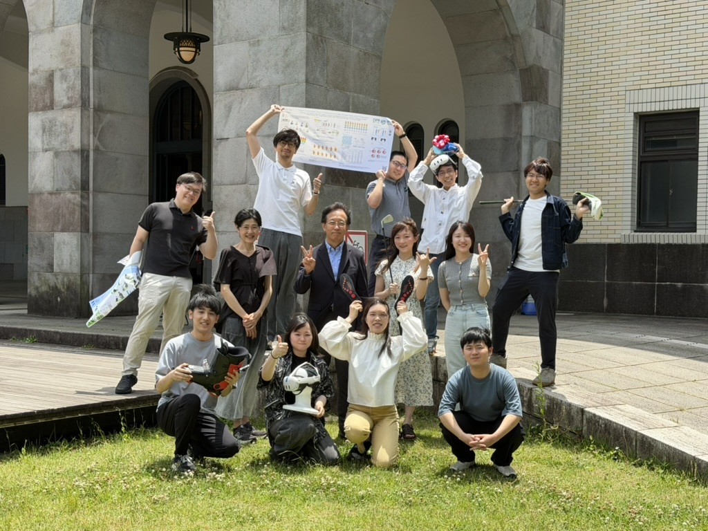
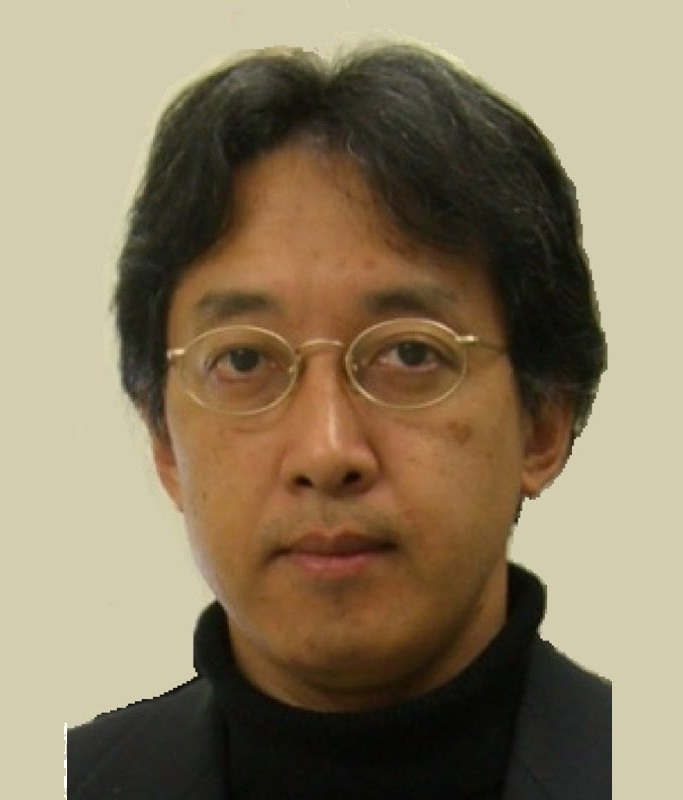

開催にあたってAbout

小池研同窓生・関係者のみなさま
2027年3月をもって、小池英樹は東京科学大学を定年退職します。
恒例により最終講義を行いますが、例年年末に開催していた「Koike Lab United」と統合して行うこととしました。
まずは日程が決まりましたので、参加可能な方は、ぜひご予定をおさえておいていただけますと幸いです。
参加登録などの詳細は、追ってご案内します。
プログラムProgram
2027年3月14日 日曜日
暫定Koike Lab United
小池研同窓生の集い
Lunch
昼食
最終講義
懇親会
※ スケジュールは暫定です。今後変更となる場合があります。時刻は日本標準時（JST）です。
会場Venue
参加登録Registration
後日ご案内
参加登録の方法など、詳細は追ってご連絡します。
まずは、2027年3月14日（日）のご予定をおさえておいてください。